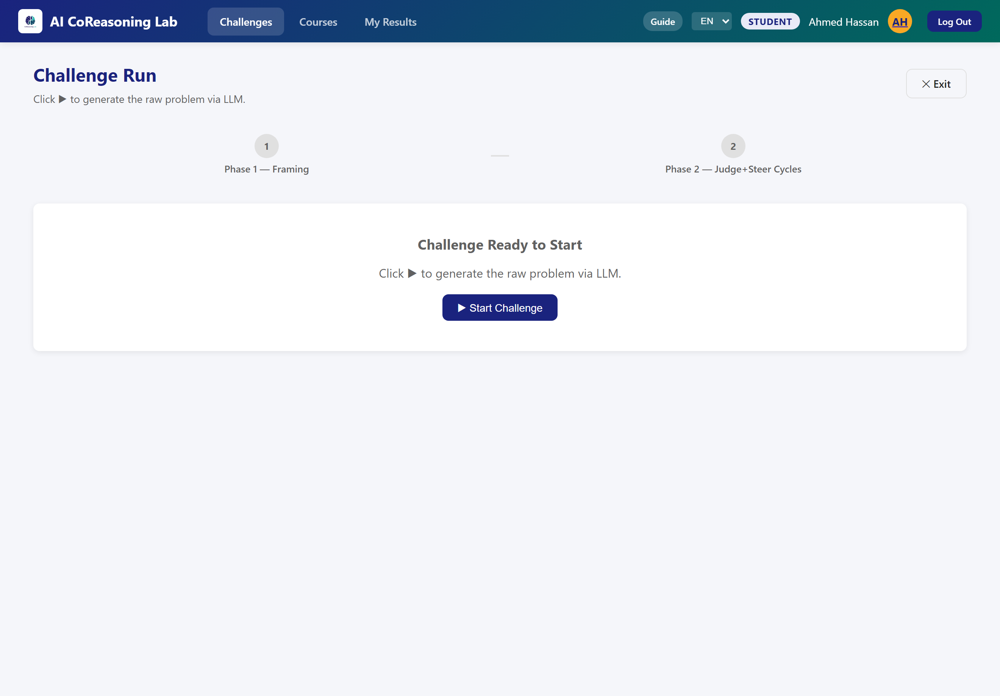
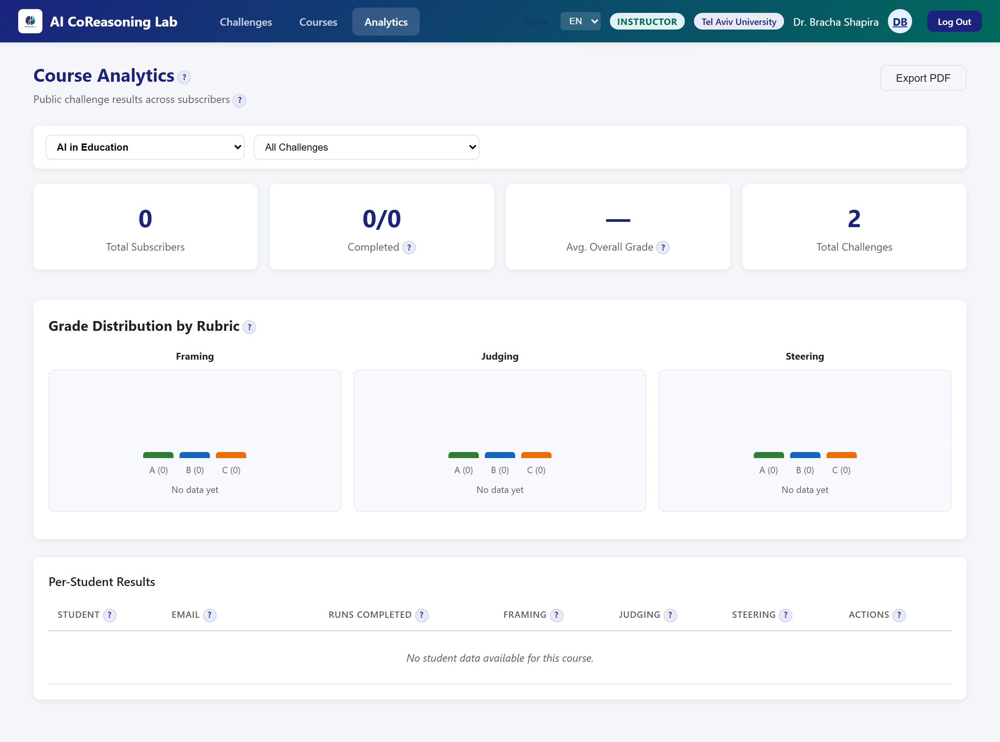
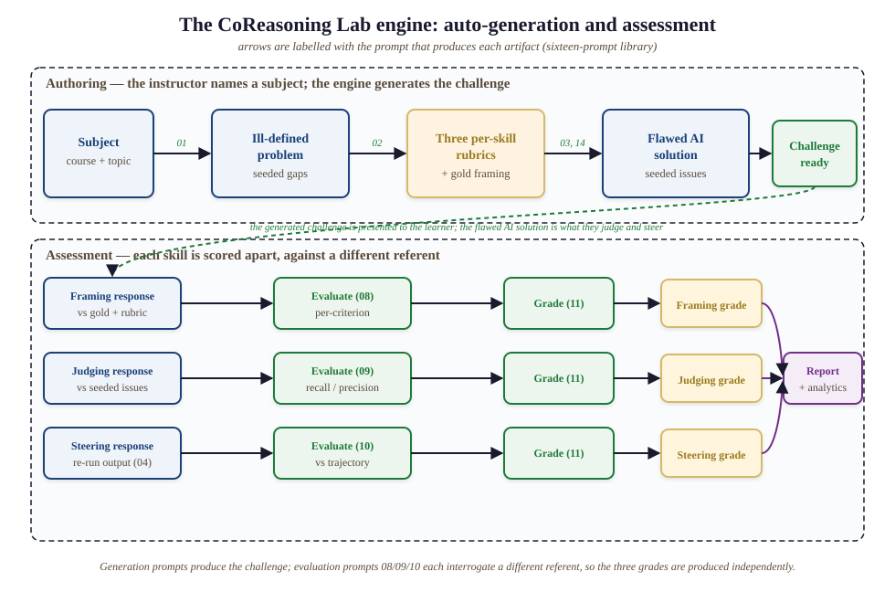

Supplementary Material for "Beyond Prompting: Framing, Judging, and Steering as Assessable Competencies for Reasoning With Generative AI in Higher Education."
Figure A1 shows a single challenge run in CoReasoningLab, illustrating how the three skills appear as distinct, separately-scored stages of one continuous task. In Phase 1 the learner refines an ill-defined problem and receives a Framing grade. The system then produces a deliberately flawed solution. In Phase 2 the learner judges that output (flagging real issues while avoiding distractors) and steers the AI with a targeted correction; the output converges across cycles. The final report returns three independent grades with per-skill diagnostic feedback, the interface-level expression of the framework's central claim that productive AI use is not one skill but three.

Figure A1. Screenshot of the running platform: a learner's challenge run at the Framing phase. The engine has generated an ill-defined problem (here, an AI hiring-screening task), and the learner specifies refinements before any solution is produced. The two-phase structure is explicit in the interface, Phase 1 (Framing) and Phase 2 (the Judge-Steer cycle), and each skill is scored and given feedback independently.
The platform exposes role-specific interfaces beyond the challenge run (Figure A2). Students see a dashboard of pending challenges and courses and a personal results view that trends Framing, Judging, and Steering separately over time. Instructors author challenges (the system auto-generates the ill-defined problem and the three per-skill rubrics) and read course analytics that break grade distributions down by rubric and by student. In every view the three skills remain distinct columns, which is the design commitment the framework makes visible.

Figure A2. Screenshot of the running platform: the instructor course-analytics view. Grade distribution is broken out into separate Framing, Judging, and Steering panels, and the per-student results list the three skills as distinct columns, the interface-level expression of the framework's central claim that productive AI use is not one skill but three.

Figure A3. The sixteen-prompt engine in two phases. In authoring, the instructor names a subject and the engine generates the ill-defined problem (prompt 01), three per-skill rubrics and a gold framing (02, 14), and a deliberately flawed AI solution carrying seeded issues (03). In assessment, each learner response is scored against a different referent: Framing against the gold framing and rubric (08), Judging against the seeded issues (09), and Steering against the corrected trajectory after the output is re-run (04, 10); a single grader prompt (11) then assigns each skill its own grade, and the three feed the per-student report and course analytics. Because the three evaluation prompts interrogate different referents, the grades are produced independently rather than as one global impression.
Reliability. To check that the grades are not noise, we hold four learner transcripts fixed and re-run the evaluation-and-grading prompts five times each, an independent sample each time at the production temperatures. The grader is 92% self-consistent overall: the mean grade-flip rate across repeats is 0.08, with Judging deterministic (0.00, by construction), Framing 0.15, and Steering 0.10, and a mean within-cell grade standard deviation near 0.2 on the three-point scale, indicating that disagreements are occasional one-level boundary jitter rather than unstable scoring. This addresses the documented self-inconsistency of LLM judges, though it measures precision (repeatability), not accuracy against humans (Section 9.3). Because Judging contributes a flip rate of zero by construction, the load-bearing figure is the blind-graded skills, whose flip rate is near 0.12.
Grader-backend robustness (across vendors). The dissociation holds across three grader backends spanning two providers. The primary grades come from gpt-4o; re-grading the identical 40 transcripts (challenges and learner responses held fixed) with gpt-4o-mini reproduces it (diagonal +0.47 versus off-diagonal +0.07), and re-grading the same transcripts with an independent-vendor model, Meta's llama-3.3-70b (the prototype's own engine), reproduces it again with a stronger margin: own-skill effects of +0.80 (Framing), +0.75 (Judging), and +0.40 (Steering) against a mean cross-skill effect of +0.02, a diagonal-to-off-diagonal ratio of 39. Two facts stand out across backends. First, Judging's own-effect is +2.00 only under gpt-4o's strict adherence to the seeded-issue selection; under both gpt-4o-mini and the independent-vendor llama it settles to +0.65 and +0.75, level with Framing (+0.65 and +0.80), so the separation is balanced across all three skills, not propped up by the built-in Judging diagonal. Second, every backend reproduces the designed contrast profiles (a strong-framer / weak-judge learner scores high Framing and low Judging, and the inverse for a weak-framer / strong-judge learner), which a single general-ability account cannot produce. Because the result holds across three independently-versioned models from two vendors (gpt-4o, gpt-4o-mini, and Meta's llama-3.3-70b), it does not hinge on a single model snapshot; the released harness pins the model identifiers so the run reproduces, and the cross-backend agreement is the evidence that it generalizes beyond any one of them. Cross-vendor replication is therefore established, not deferred.
Dependence on ground-truth scaffolding. To probe how much the instrument's discrimination relies on the seeded ground truth (the gold framing supplied to the framing evaluator and the known seeded issues supplied to the judging evaluator) versus the model's own judgment, we re-grade a 40-learner subset (five subjects) with that scaffolding removed, comparing against that subset's own baseline (Framing +0.60, Judging +2.00, Steering +0.50). The effect is sharply skill-specific. Framing discrimination is essentially unaffected (own-effect +0.75 without the gold reference, versus +0.60 with it): the rubric and the model's own judgment carry it. Judging discrimination, by contrast, falls sharply (+2.00 to +0.45): without the known issues the grader has no recall-precision anchor and no longer separates strong from weak judging. Steering falls in between (+0.50 to +0.25). The skills still dissociate (ratio 29), and the result pinpoints what each grade measures: Framing and Steering are scored largely by rubric-guided model judgment, whereas Judging as instrumented here tracks agreement with a known answer key. This both explains Judging's by-construction +2.00 and locates the Judging score precisely: it applies where ground truth is known, and open-ended judging without a key is the distinct instrumentation Section 9.3 specifies.
The framework and the platform are domain-general. An ill-defined problem with seeded flaws, three per-skill rubrics, and a deliberately-imperfect AI solution can be generated for any subject, because each is produced by a prompt that an educator parameterizes with a course and topic. The released platform ships challenge content across twelve disciplines (Table C1) spanning STEM, the social sciences, the humanities, law, and professional and education fields. CoReasoningLab is in this sense not a computing-education tool but a generic instrument for any discipline in which a learner must specify an ill-defined task, judge a fallible solution, and steer it toward a better one.
Table C1. Disciplines covered by the released challenge content.
| Area | Disciplines |
|---|---|
| STEM | Computer Science (algorithms); Physics (classical mechanics); Mathematics (linear algebra); Electrical Engineering (signal processing); Biology (molecular biology) |
| Social sciences | Economics (microeconomics); Political Science (international relations); Psychology (cognitive psychology) |
| Humanities and law | Philosophy (applied ethics); Law (constitutional law) |
| Professional and education | Business (organizational behavior); Education (educational technology) |
The four examples below are real ill-defined problems the platform generated, in applied ethics, physics, instructional design, and computing, each of which a learner must Frame before the AI produces a flawed solution to Judge and Steer:
The deliberate gaps differ by discipline (a missing fairness criterion in the ethics task, an unstated launch or safety constraint in the physics task, undefined learning objectives in the lesson-plan task), but the learner's work is identical across all of them: specify the task (Framing), evaluate the AI's flawed solution (Judging), and redirect it toward an adequate one (Steering). Full per-discipline session logs ship with the platform.